Select any image to open it at full size; use your browser’s Back button to return. No development software needed. The parent dashboard shown here is a mocked fictional family, not a screenshot of your staging accounts. Physical iPad Safari and deferred recovery delivery remain pending.
desktop-camp

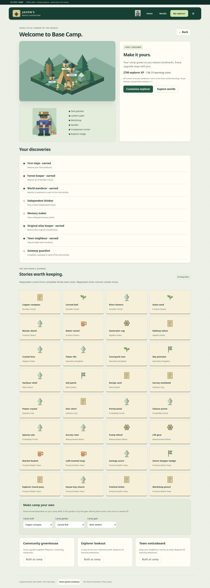

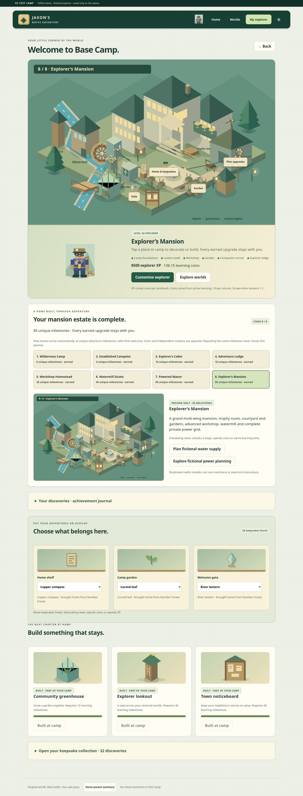
desktop-home

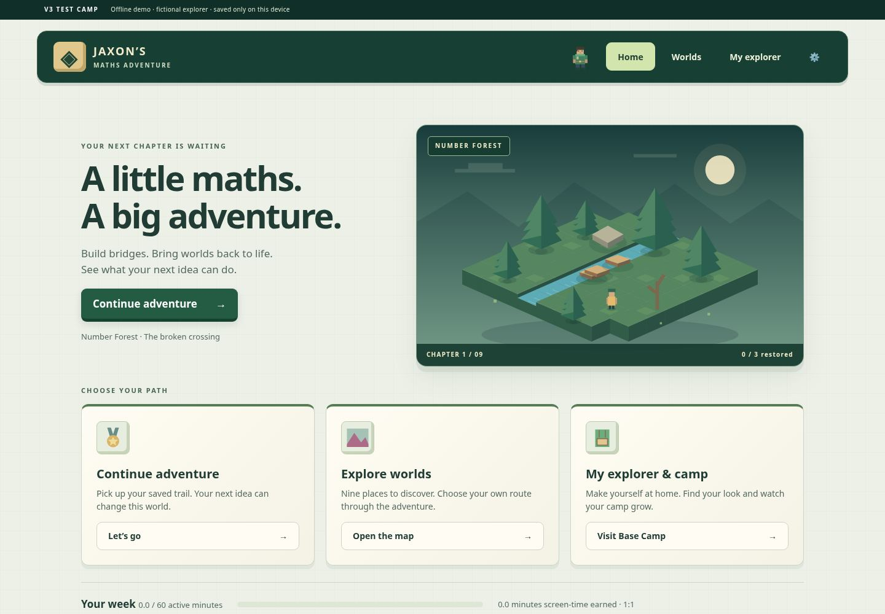

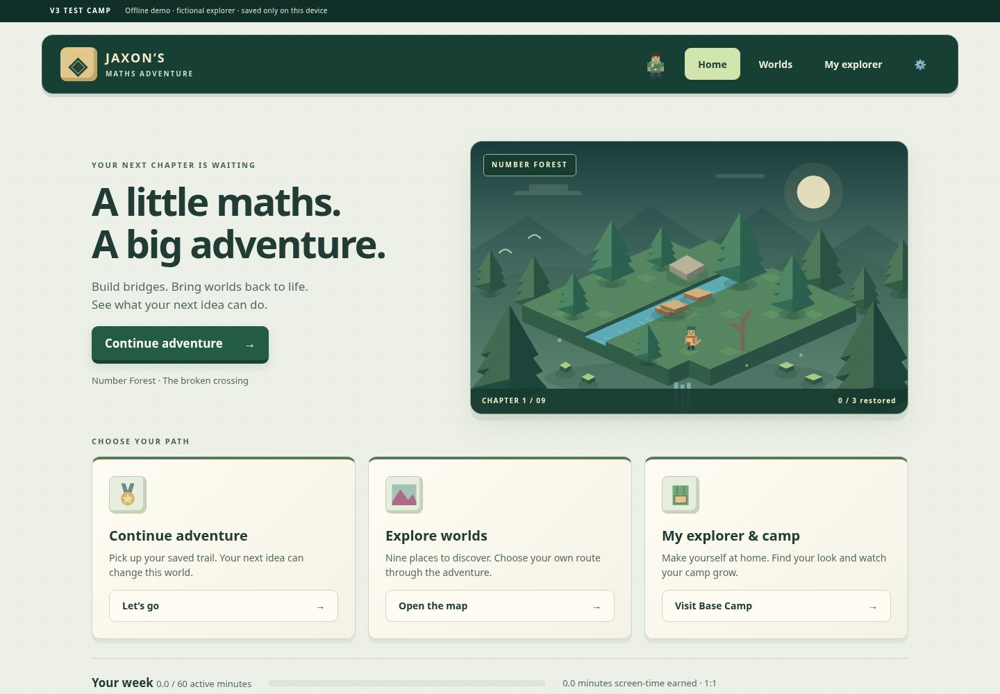
desktop-map

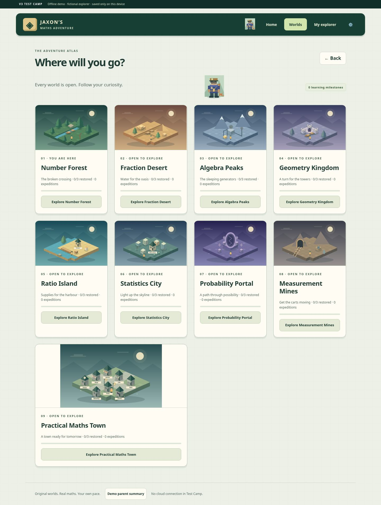

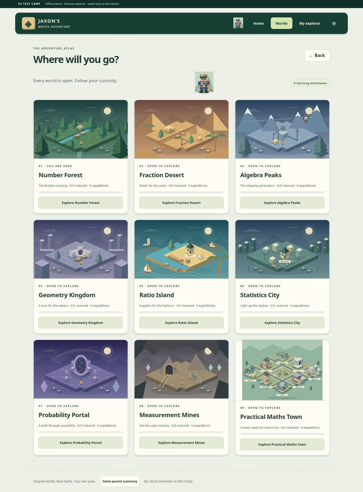
desktop-quest

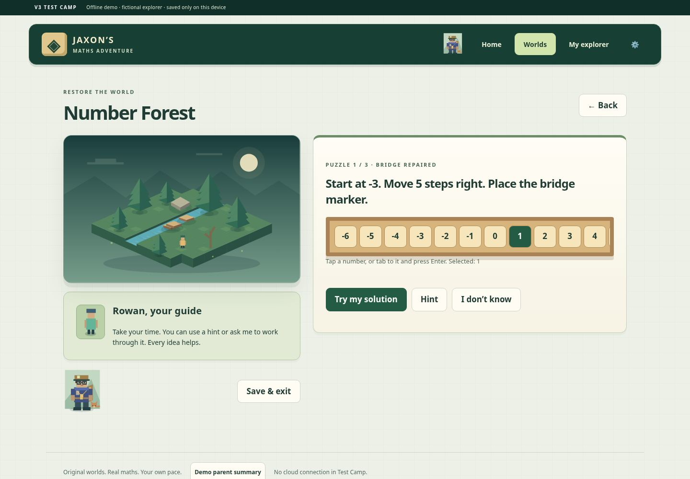

desktop-town-market

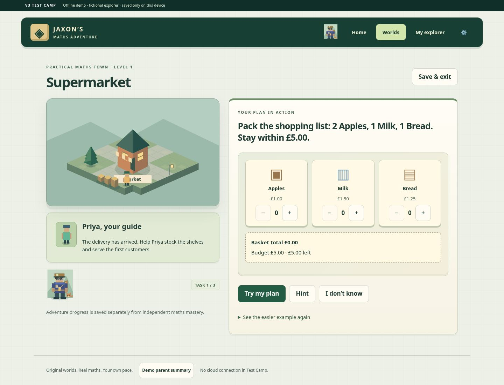

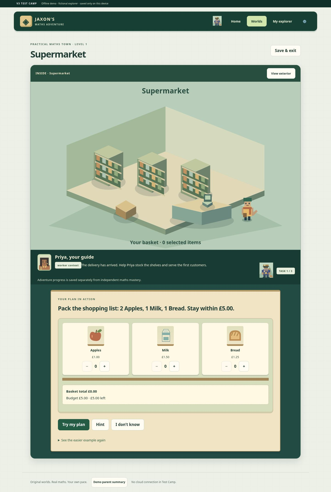
desktop-wardrobe


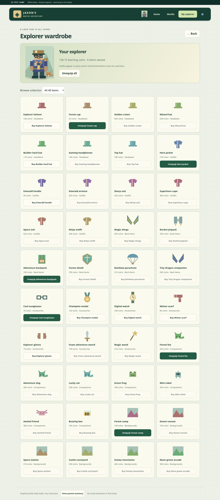
ipad-portrait-quest

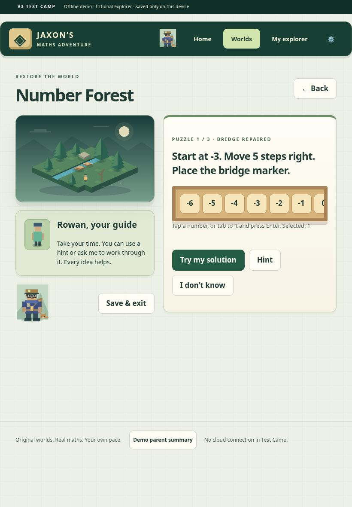

Review only. V2, production data, the live homepage and GitHub Pages are unchanged. Main goal: one later consolidated family acceptance session.